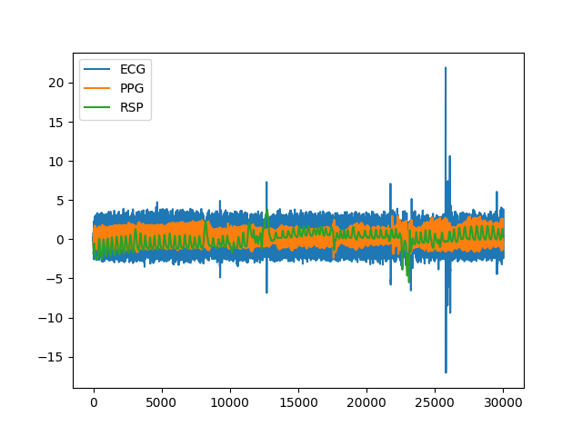
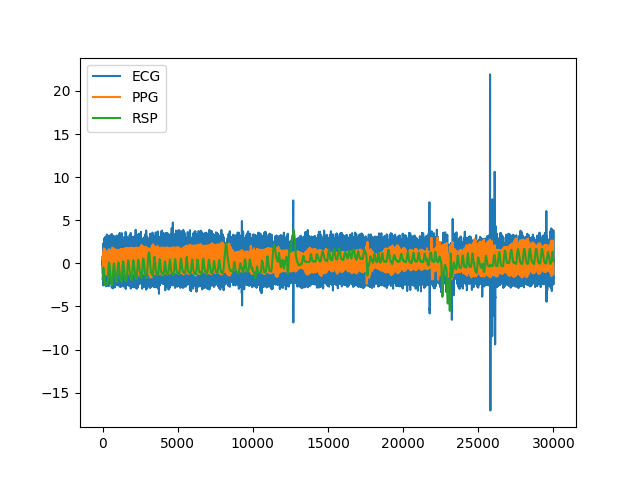

Data
Contents
Data#
Datasets#
data()#
- data(dataset='bio_eventrelated_100hz')#
NeuroKit Datasets
NeuroKit includes datasets that can be used for testing. These datasets are not downloaded automatically with the package (to avoid increasing its weight), but can be downloaded via the
nk.data()function (note that an internet connexion is necessary). See the examples below.Signals: The following signals (that will return an array) are available:
ecg_1000hz: Returns a vector containing ECG signal (
sampling_rate=1000).ecg_3000hz: Returns a vector containing ECG signal (
sampling_rate=3000).rsp_1000hz: Returns a vector containing RSP signal (
sampling_rate=1000).eeg_150hz: Returns a vector containing EEG signal (
sampling_rate=150).eog_100hz: Returns a vector containing vEOG signal (
sampling_rate=100).
DataFrames: The following datasets (that will return a
pd.DataFrame) are available:iris: Convenient access to the Iris dataset in a DataFrame, exactly how it is in R.
eogs_200hz: Returns a DataFrame with
hEOG,vEOG.Single subject
Visual and horizontal electrooculagraphy
sampling_rate=200
bio_resting_5min_100hz: Returns a DataFrame with
ECG,PPG,RSP.Single subject
Resting-state of 5 min (pre-cropped, with some ECG noise towards the end)
sampling_rate=100
bio_resting_8min_100hz: Returns a DataFrame with
ECG,RSP,EDA,PhotoSensor.Single subject
Resting-state of 8 min when the Photosensor is low (need to crop the data)
sampling_rate=100
bio_resting_8min_200hz: Returns a dictionary with four subjects (
S01,S02,S03,S04).Resting-state recordings
8 min (
sampling_rate=200)Each subject is DataFrame with
ECG,RSP`, ``PhotoSensor,Participant
bio_eventrelated_100hz: Returns a DataFrame with
ECG,EDA,Photosensor,RSP.Single subject
Event-related recording of a participant watching 4 images for 3 seconds (the condition order was:
["Negative", "Neutral", "Neutral", "Negative"])sampling_rate=100
- Parameters
dataset (str) – The name of the dataset.
- Returns
DataFrame – The data.
Examples
Single signals and vectors
In [1]: import neurokit2 as nk In [2]: ecg = nk.data(dataset="ecg_1000hz") In [3]: nk.signal_plot(ecg[0:10000], sampling_rate=1000)
In [4]: rsp = nk.data(dataset="rsp_1000hz") In [5]: nk.signal_plot(rsp[0:20000], sampling_rate=1000)
In [6]: eeg = nk.data("eeg_150hz") In [7]: nk.signal_plot(eeg, sampling_rate=150)

In [8]: eog = nk.data("eog_100hz") In [9]: nk.signal_plot(eog[0:2000], sampling_rate=100)
DataFrames
In [10]: data = nk.data("iris") In [11]: data.head() Out[11]: Sepal.Length Sepal.Width Petal.Length Petal.Width Species 0 5.1 3.5 1.4 0.2 setosa 1 4.9 3.0 1.4 0.2 setosa 2 4.7 3.2 1.3 0.2 setosa 3 4.6 3.1 1.5 0.2 setosa 4 5.0 3.6 1.4 0.2 setosa
In [12]: data = nk.data(dataset="eogs_200hz") In [13]: nk.signal_plot(data[0:4000], standardize=True, sampling_rate=200)
 
In [14]: data = nk.data(dataset="bio_resting_5min_100hz") In [15]: nk.standardize(data).plot() Out[15]: <AxesSubplot:>
In [16]: data = nk.data(dataset="bio_resting_8min_100hz") In [17]: nk.standardize(data).plot() Out[17]: <AxesSubplot:>

In [18]: data = nk.data("bio_resting_8min_200hz") In [19]: data.keys() Out[19]: dict_keys(['S01', 'S02', 'S03', 'S04']) In [20]: data["S01"].head() Out[20]: ECG RSP PhotoSensor Participant 0 2.394536e-19 5.010681 5.0 S01 1 1.281743e-02 5.011291 5.0 S01 2 1.129138e-02 5.010376 5.0 S01 3 7.629118e-04 5.010681 5.0 S01 4 -4.119742e-03 5.010986 5.0 S01
In [21]: data = nk.data("bio_eventrelated_100hz") In [22]: nk.standardize(data).plot() Out[22]: <AxesSubplot:>
{kind=link}
{kind=link}
{kind=link}
{kind=link}
{kind=link}